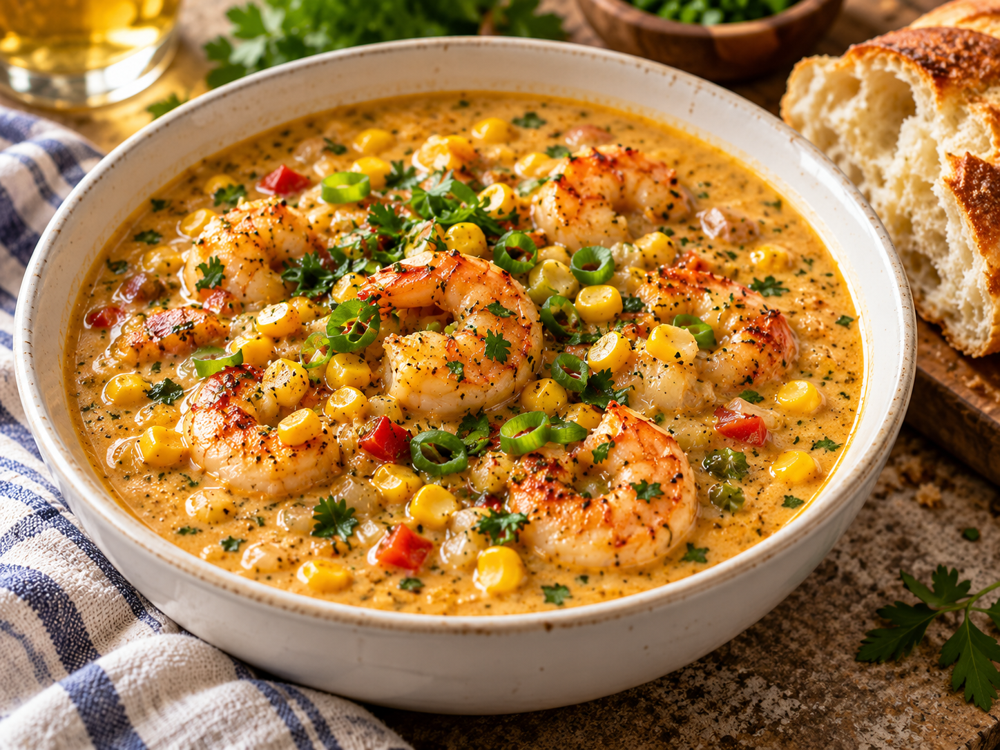

SOUP · SEAFOOD
New Orleans Shrimp & Corn Bisque
Creamy, deeply savory, and slightly sweet from the corn. Serve with crusty French bread and a bright green salad.
Prep 15 minCook 30 minServes 6
Ingredients
- 1 lb peeled and deveined shrimp
- 4 tbsp butter
- 1 small onion, finely diced
- 1 celery stalk, finely diced
- 1 small bell pepper, finely diced
- 2 cloves garlic, minced
- ¼ cup all-purpose flour
- 3 cups seafood or chicken stock
- 2 cups corn kernels
- 1 cup heavy cream
- 1 tsp Creole seasoning, plus more to taste
- Salt, black pepper, and hot sauce to taste
- Sliced green onion or parsley for garnish
Preparation
- Melt the butter in a heavy pot over medium heat. Add onion, celery, and bell pepper. Cook until softened, about 6–8 minutes.
- Add garlic and cook for 30 seconds. Sprinkle in the flour and stir continuously for 2–3 minutes.
- Slowly whisk in the stock. Add corn and Creole seasoning. Bring to a gentle simmer and cook for 10 minutes.
- Stir in the cream. Add shrimp and simmer just until the shrimp are opaque and cooked through, about 3–5 minutes.
- Season with salt, pepper, and hot sauce. Garnish with green onion or parsley and serve hot.
Cook's note: For a thicker bisque, blend 1–2 cups of the soup before adding the shrimp, then return it to the pot.